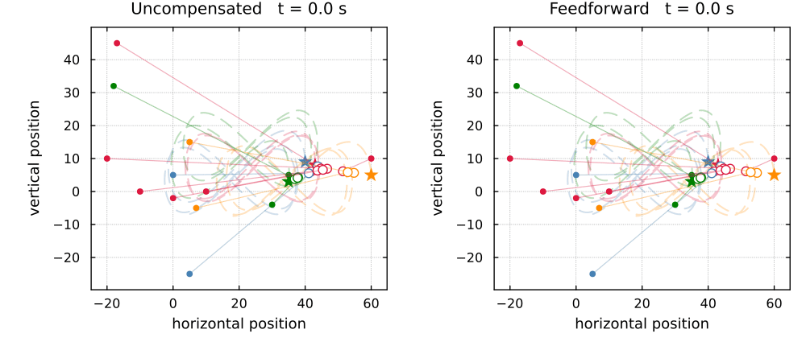
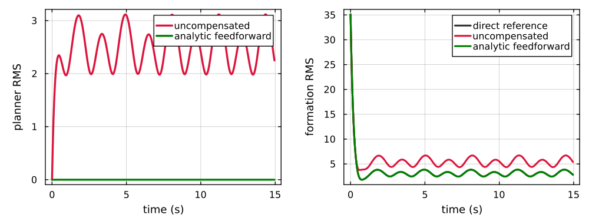

Complete Tracking Scenarios
The planner result matters only if it survives the local execution layer. The experiments here propagate the same harmonic reference through the existing physical-agent environment and keep planner and formation errors separate.
Matched multi-agent run
Both runs use the repository's existing examples/multi_agent_target_tracking configuration. The experiment builds its 13-agent, four-target sheaf, advances the configured 3-D target figure-eights, solves every harmonic reference, applies the implemented Tikhonov planner, and advances the local reference controller. Targets, initial states, gains, and $\epsilon=0.2$ are matched; only feedforward changes.

Stars are generated targets, open circles are solved harmonic references, and filled circles are physical agents. Short solid trails show recent agent motion; each thin connector is the instantaneous formation error. Nothing in this animation is positioned by the renderer.
Error propagation through the cascade
The upper trace measures only $x-q^\star$. The lower trace measures physical position relative to the ideal harmonic formation. This exposes how planner lag survives an otherwise stable local tracking loop.

| configuration | planner RMS | formation RMS |
|---|---|---|
| direct | 0 | 3.17 |
| uncompensated | 2.56 | 5.53 |
| feedforward | 3.41e-15 | 3.17 |
Feedforward restores the direct harmonic rollout to numerical precision. The remaining $3.17$ is local execution lag at the scenario's spatial scale, not a residual harmonic-solve error.
Stationary targets
With the target boundary held fixed, $q^\star$ is constant. The planner follows the measured $e^{-t/\epsilon}$ decay on the stability page, and the local tracking errors also vanish. The complete cascade therefore converges to the stationary target-relative formation.
Reproduction
Regenerate every trajectory, figure, and reported metric with:
julia --project=docs docs/scripts/tikhonov_figures.jl
julia docs/scripts/tikhonov_deployment.jlThe first command regenerates the controlled theorem checks. The second runs the deployed environment and writes its figures directly from the recorded rollout.